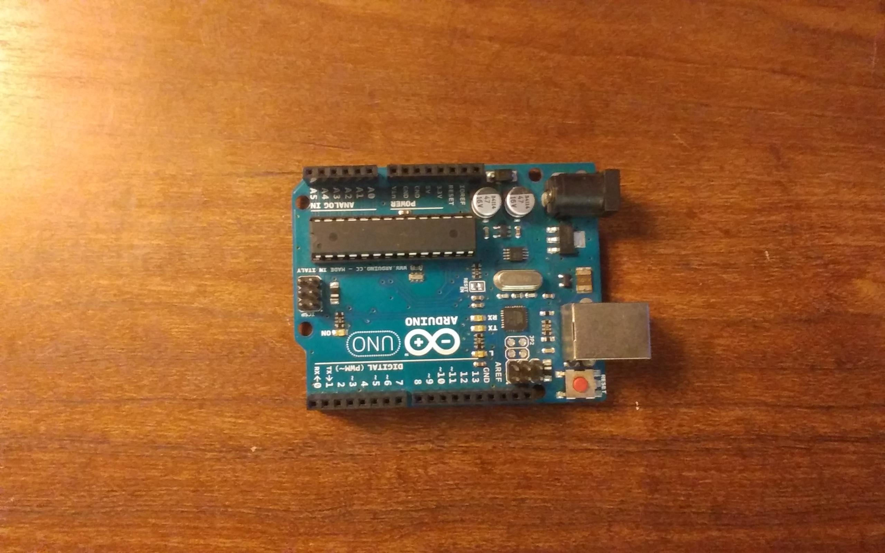
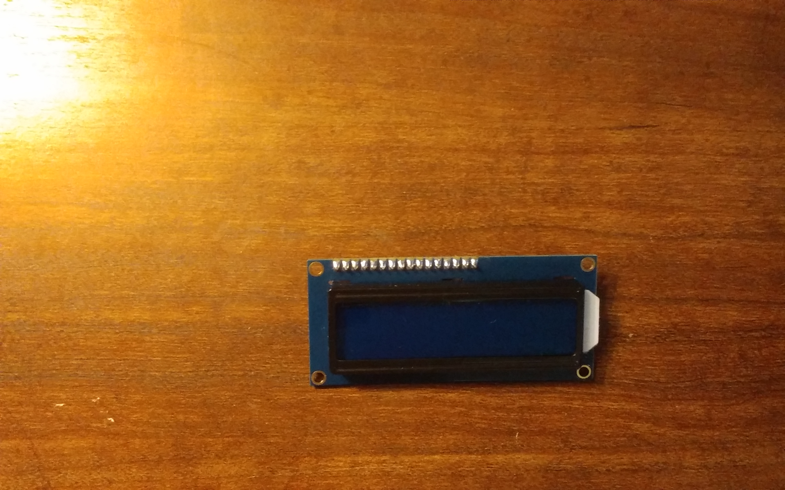
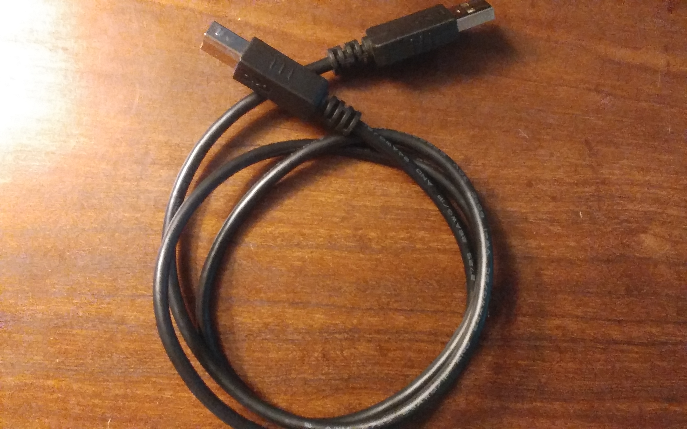
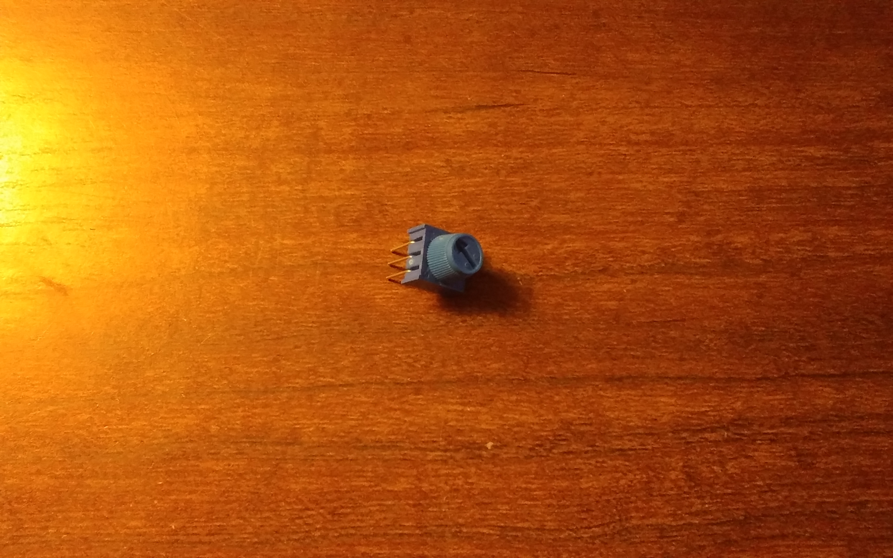

For the project there are a couple of different parts we need. First of course is the Arduino microcontroller. Almost any of the ATMEGA style microcontrollers will work for this project as i will be showing how to setup the LCD screen in 4-bit mode as this uses only 6 arduino digital pins.
Arduino


Hitachi HD44780 LCD Screen

USB Cable for data and power to Arduino

Potentiometer for contrast control
Additionaly you will need a 220 ohm resistor for the backlight.